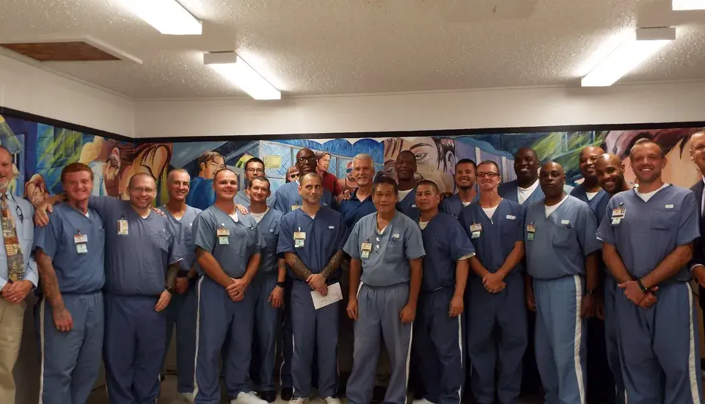
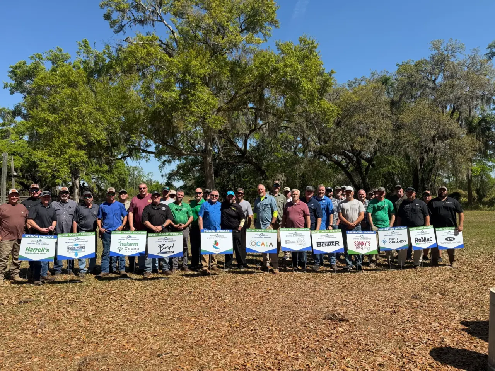

Operation Launch
Up to 36 months of classes in faith, family, work, and daily life, taught inside Marion Correctional Institution. The core curriculum was accredited by the Florida Department of Corrections clearinghouse in 2018.
501(c)(3) prison ministry and reentry training · Marion County, Florida
Mission
Xtreme SOULutions guides participants out of prison life onto a path of restoration and renewal. Our Christ-centered programs and wrap-around care support healing, community connections, and family reunification.
We are a 501(c)(3) organization dedicated to the people of Marion County. We partner with churches, businesses, and neighbors who are ready to help break the cycle of poverty and repeat incarceration.

The work
Up to 36 months of classes in faith, family, work, and daily life, taught inside Marion Correctional Institution. The core curriculum was accredited by the Florida Department of Corrections clearinghouse in 2018.
When a sentence ends, the work does not. Graduates leave with clothes, tools, work boots, food, counseling, and job referrals so the first days outside are not a setup for failure.
An organic garden inside the compound teaches work, teamwork, and stewardship. Harvests feed the gardeners and local shelters.
"A father to the fatherless, a defender of widows, is God in his holy dwelling. God sets the lonely in families, he leads out the prisoners with singing."
Psalm 68:5-6


Join the work
Teach a class. Fund garden irrigation. Sponsor a station at the sporting clays shoot out. Share the mission with people who already trust you. Or send the supplies men need the day they walk out.